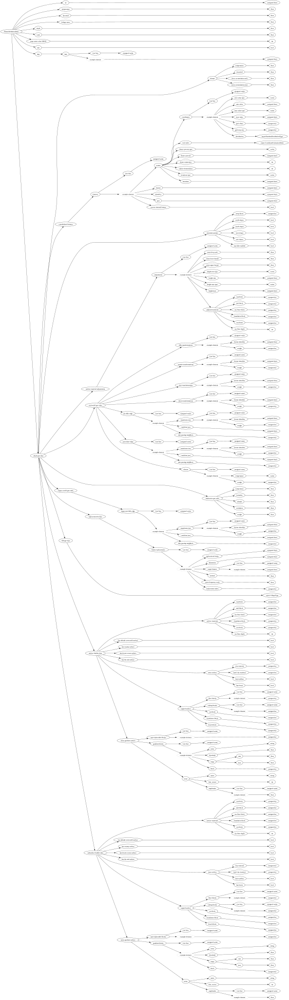

| Field Name | Field Type | Field Constraints | Field Notes |
|---|---|---|---|
| id | unsigned short | <div style="padding-left: 0px;">Minimum = 0</div> | |
| temperature | float | ||
| downfall | float | ||
| foliage snow | float | 0-1 how frozen the leaves look | |
| depth | float | ||
| scale | float | ||
| map water color ARGB | int | ||
| rain | bool | ||
| tags | BiomeTagsData | ||
| chunk gen data | BiomeDefinitionChunkGenData | Only used with client-side chunk generation |